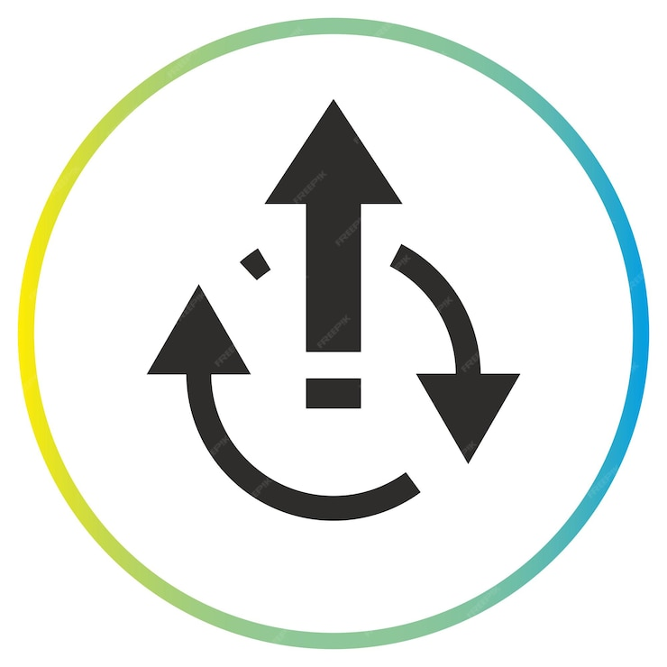
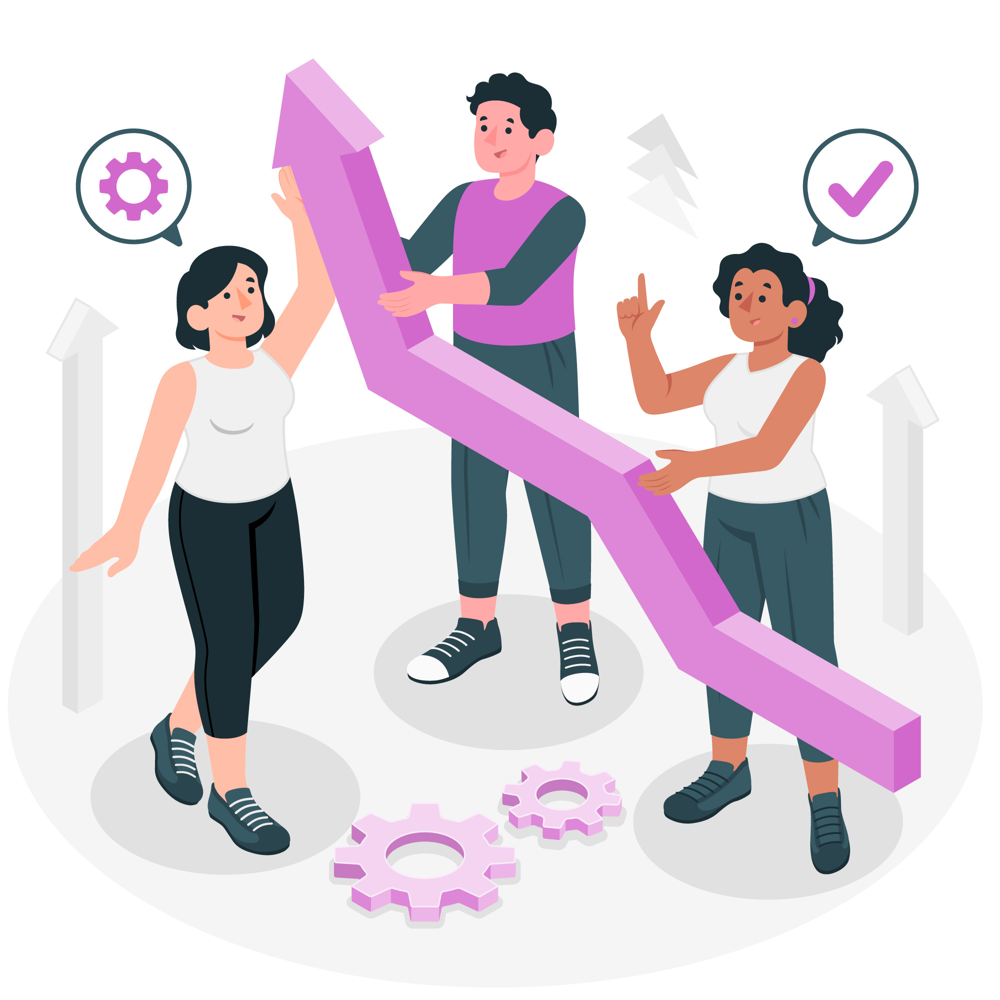

La Gestión por Procesos (BPM) es una metodología que optimiza la forma en que una empresa trabaja, asegurando eficiencia y mejora continua.
Identificación de procesos
Definir y listar procesos.
Modelado
Crear diagramas de flujo.
Ejecución
Implementar los procesos.
Optimización
Mejorar continuamente.
Medición y control
Analizar el rendimiento.
BPM es un proceso cíclico de mejora constante.
Desorganización y baja eficiencia.
Optimización y mejora continua.
La Gestión por Procesos transforma la eficiencia empresarial y mejora la competitividad. ¡Es momento de optimizar tu empresa con BPM!
